| Luzon | 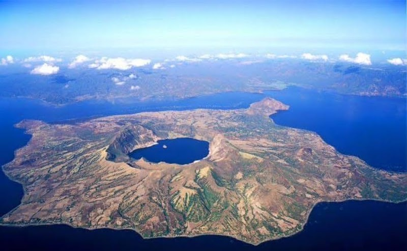 Location:Cavite,Taal Volcano Description:Relaxed,scenic, and a culinary hotspot. |
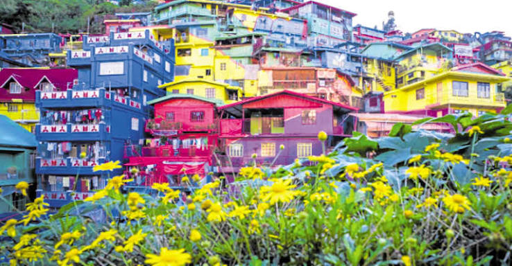 Location:Baguio,Benguet Description:Crisp mountain air, cozy coffee shops, and artistic spaces. |
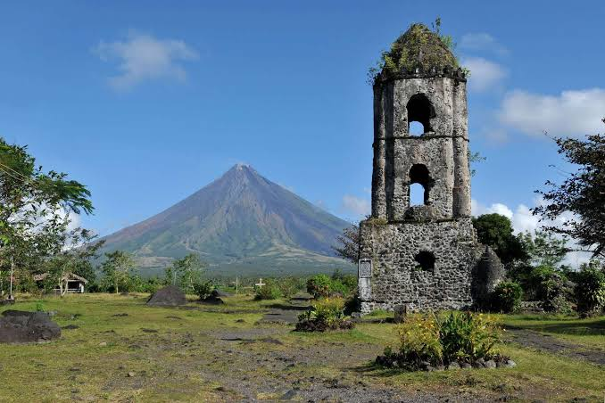 Location:Mt.Mayon,Albay Description:Adventurous, breath taking, and awe-inspiring. |
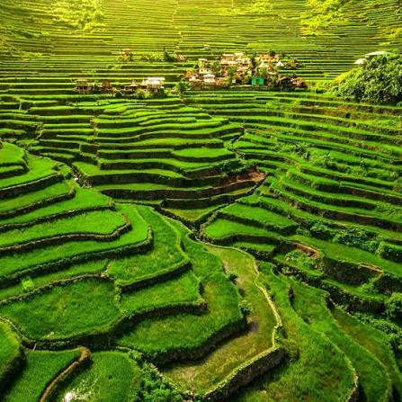 Location:Banaue Rice Terrace,Ifugao Description:Majestic, cultural, and deeply historic. |
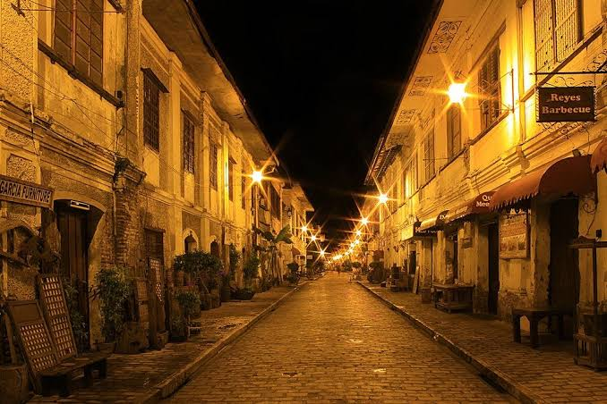 Location:Vigan City, Ilocos Sur Description:Historic, charming, and highly photogenic. |
|---|---|---|---|---|---|
| Visayas | 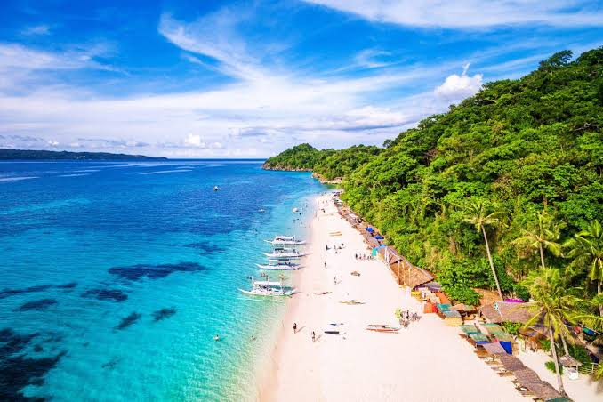 Location:Boracay,Aklan Description:Powdery white sand beaches and iconic tropical sunsets. |
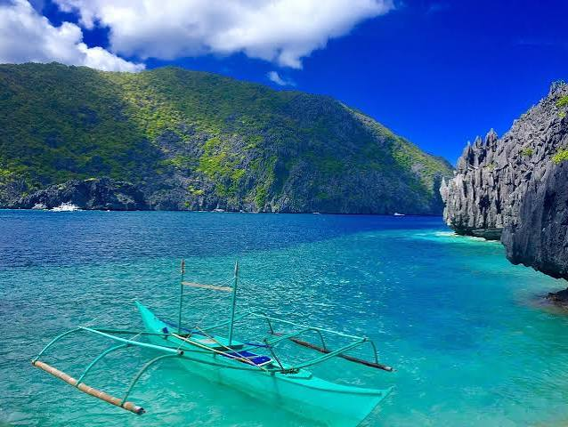 Location:El nido,Palawan Description:Adventurous, pristine, and world-class. |
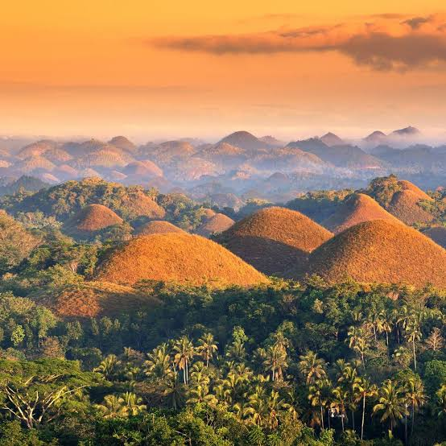 Location:Chocolate Hills,Bohol Description:Scenic, diverse, and family-friendly. |
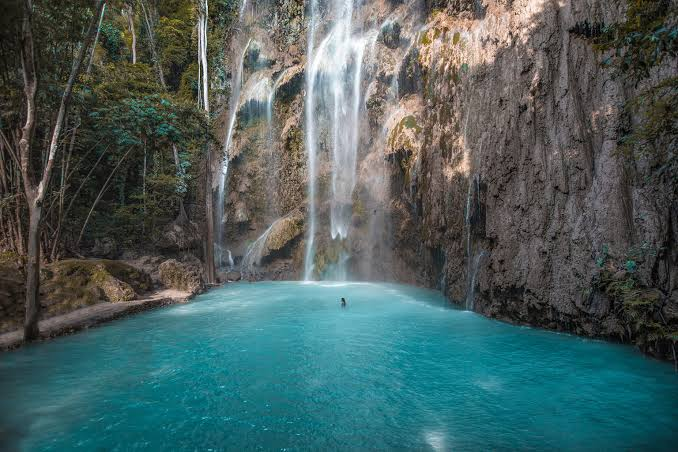 Location:Cebu Island,Cebu City Description:Cultural, bustling, and highly adventurous. |
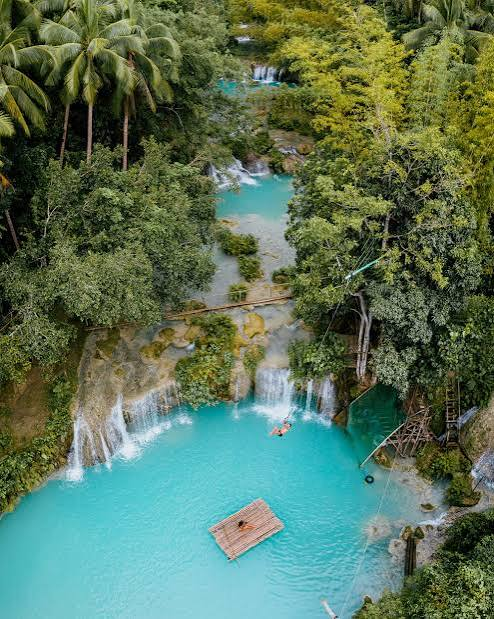 Location:Siquijor Island Description:Laid-back, mystical, and uncrowded |
| Mindanao | 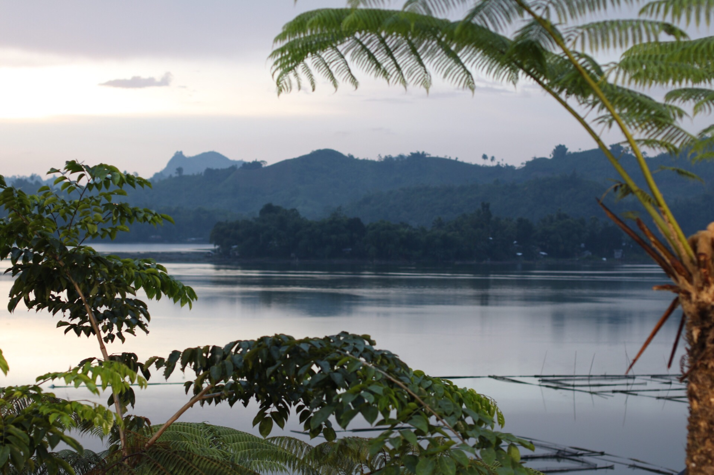 Location:Lake Sebu,South Cotabato Description:Highland lake known for indigenous culture and waterfalls. |
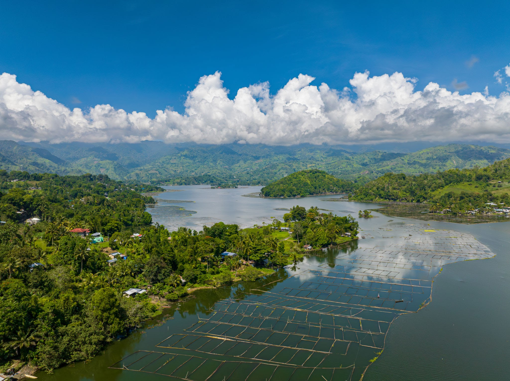 Location:Mt.Apo,Davao del sur Description:The highest mountain peak in the Philippines. |
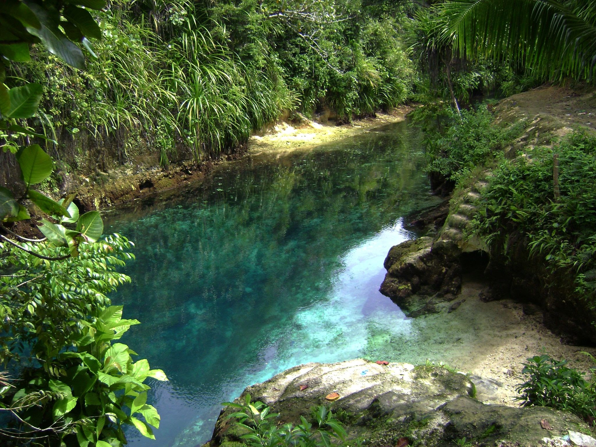 Location:Enchanted River,Surigao Del Sur Description:A famously clear, deep-blue hidden jungle spring. |
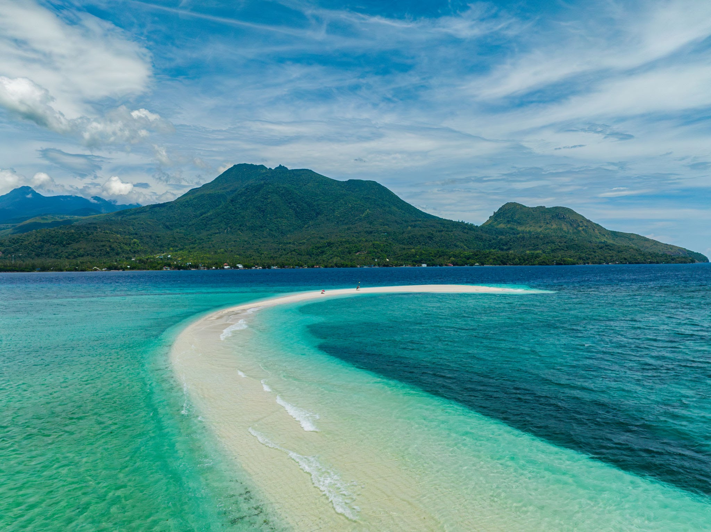 Location:Camiguin Island,Northern Mindanao Description:Volcanic island featuring hot springs and a sunken cemetery. |
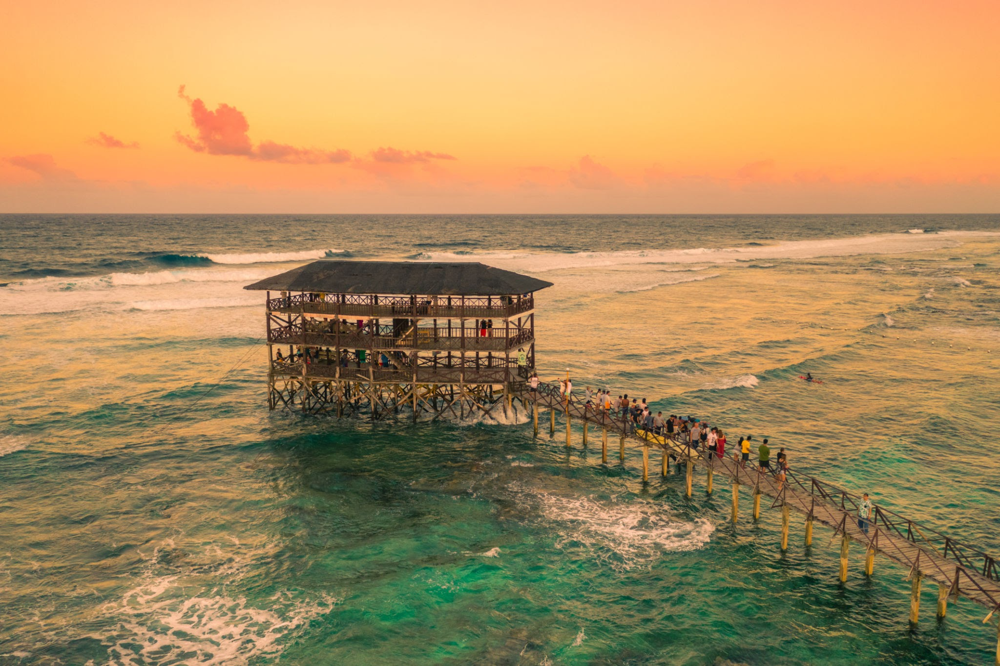 Location:Siargao Island,Siargao Del Norte Description:World-class surfing, island hopping, and endless coconut groves. |